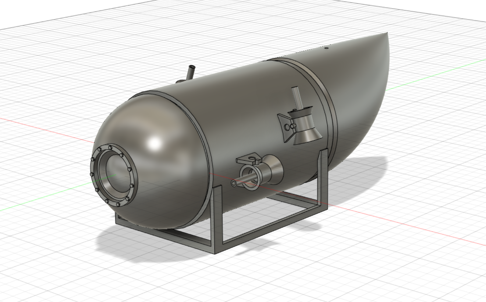
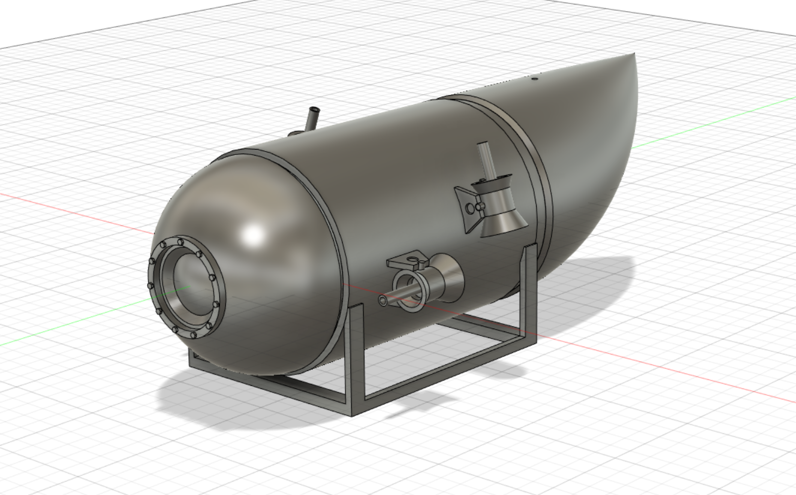
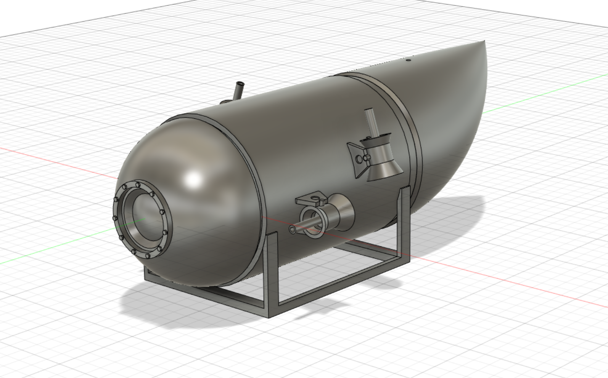
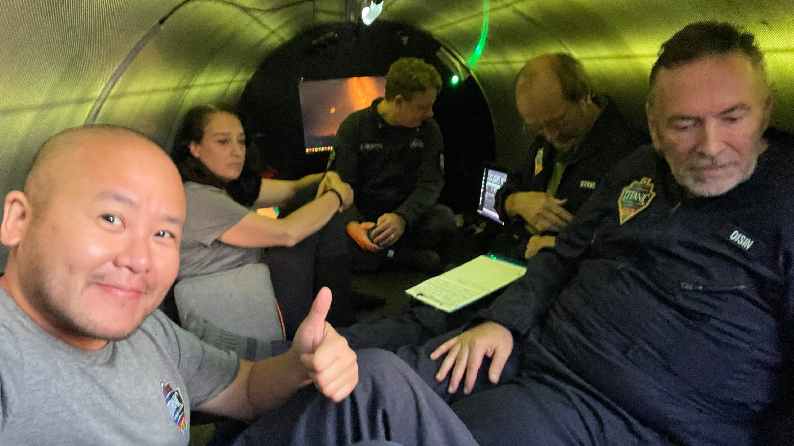

Titan could move at up to 3 knots (5.6 km/h; 3.5 mph) using four electric thrusters, arrayed two horizontal and two vertical.Its steering controls consisted of a Logitech F710 wireless game controller with modified analogue sticks. The University of Washington's Applied Physics Laboratory assisted with the control design on the Cyclops 1 using a Sony-brand Playstation 3 video game controller, which was carried over to Titan, substituting with the Logitech controller. The use of commercial off-the-shelf game controllers is common for remote-controlled vehicles such as unmanned aerial vehicles or bomb disposal robots, whilst the United States Navy uses Xbox 360 controllers to control periscopes in Virginia-class submarines.

On 18 June 2023, Titan, a submersible operated by American tourism and expeditions company OceanGate, imploded during an expedition to view the wreck of the Titanic in the North Atlantic Ocean off the coast of
Newfoundland, Canada.
|
 |
On board the submersible were Rush, the CEO of OceanGate; Paul-Henri Nargeolet, a French deep-sea explorer and Titanic expert; Hamish Harding, a British businessman; Shahzada Dawood, a Pakistani-British businessman; and Dawood's son, Suleman.